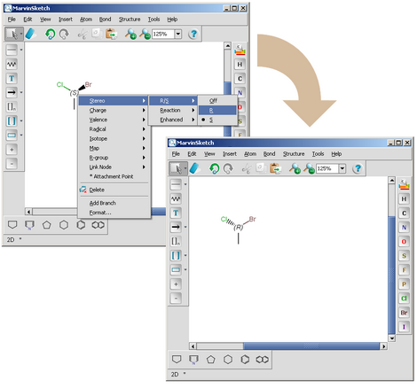

Atoms with four different substituents can have point chirality. Chirality of molecules having no actual point chirality, but axial or planar chirality is not yet supported. The following criteria need to be fulfilled for a tetrahedral stereogenic center:
The possible values of a tetrahedral stereogenic center are:
0 or atoms which are not stereogenic center. R For atoms which have chirality R. S For atoms which have chirality S. R|S For atoms which can have chirality but it is not specified.

The chirality type can be modified through the parity change of the
sterocenter described in the
Setting parity information in 0 D and
Setting parity information in 2 or 3 D
sections or with the
setChirality (int i, int c) function of the
MoleculeGraph class
Code example:
boolean success = molecule.setChirality(2, StereoConstants. CHIRALITY_R);
Chirality information can be calculated using the
getChirality(int i) function of MoleculeGraph
class in any spatial dimension.
Code example:
int c = molecule.getChirality(2);
|
Parity |
Relative configuration of tetrahedral stereo centers |